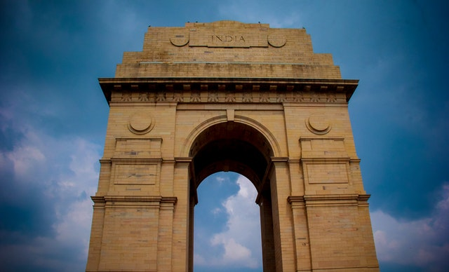

India, officially the Rebpublic of india, is a country in south asia. It is the seventh- largest country by area, The second most populous country in the world. It has many beautifu places to visit. Many tourist come to visit India for its beauty . India's traditional food and things are famous.
Things to do in India

Brown concerte gate in New Delhi
The Gate of India is an arch-monument built in the early 20th century.The Gate India arch has a height of 26 metres (85 feet) with its central dome being 15 metres (49 feet) in diameter. The monument is built of yellow basalt and reinforced concrete. The stones were sourced locally while the perforated screens were brought in from Gwalior.
Agrar Taj Mahal in Uttar pradash,India
The Taj Mahal is an ivory-white marble mausoleum on the south bank of the Yamuna river in the Indian city of Agra. It was commissioned in 1632 by the Mughal emperor, Shah Jahan (reigned from 1628 to 1658), to house the tomb of his favourite wife, Mumtaz Mahal.
Republic Day 2022: After getting independence in 1947, India’s Constitution came into force on January 26, 1950. We know this day as Republic Day. The empowerment of Indian citizens to choose their own government is commemorated on this day. It is a national holiday that honours the Indian Constitution’s formation. There are several historical sites in India which one can visit on Republic Day. However, one should take note of the Covid-19 restrictions in place due to the third wave of the pandemic.
INDIA GATE

 follow us on instragram
follow us on instragram